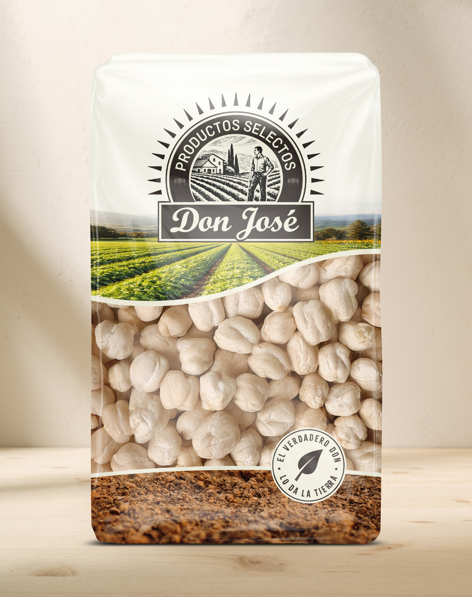

Línea en desarrollo
Gama completa de Don José, próximamente disponible
Estamos construyendo toda la línea de producto para presentarla con coherencia de marca, claridad visual y la calidad que ya conoces.
- Origen seleccionado
- Producto cuidado
- Imagen renovada
